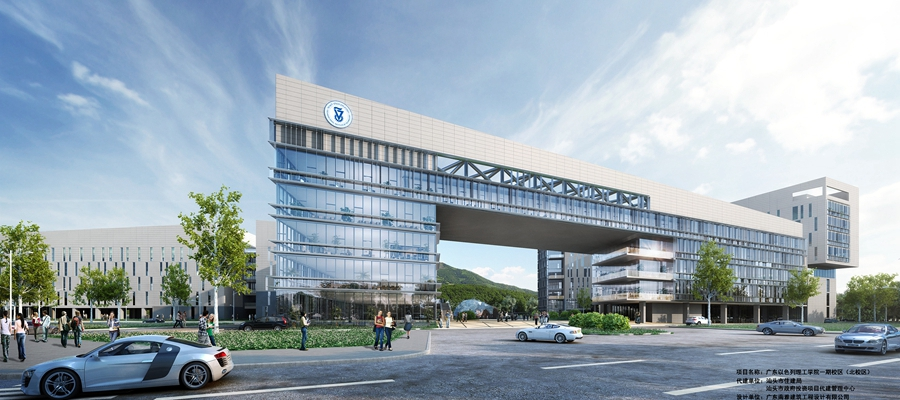

新聞詳情
广东以色列理工学院获教育部批准正式设立
2016/12/08 05:12:59

近日，教育部向广东省人民政府发出《教育部关于批准正式设立广东以色列理工学院的函》，同意正式设立广东以色列理工学院，由广东省人民政府依法进行管理。
坐落于汕头市的广东以色列理工学院（英文缩写GTIIT），是由以色列理工学院（英文缩写Technion）与汕头大学（英文缩写STU）合作创办的一所具有独立法人资格的中外合作大学，也是国内第一所引进以色列优质高等教育资源的具有独立法人资格的中外合作大学。著名经济学家、现任孙冶方经济科学基金会理事长李剑阁担任校长，2004年诺贝尔化学奖得主阿龙·切哈诺沃教授担任常务副校长。
广东以色列理工学院是建设高水平示范性中外合作大学的有益尝试，学院的筹建和设立工作得到了广东省人民政府、汕头市人民政府和李嘉诚基金会的高度重视和大力支持。记者了解到，学院将致力建设成为一所具有国际公认高水平教育、科研和创新能力的研究型大学，全面引进以色列理工学院优质教育资源，开展教育教学创新，培养具有创新能力、全球视野和人文素养的卓越工程师和科技人才，致力于新知识、新技术的创造和应用，切实推动经济社会发展。
按照规划，广东以色列理工学院将引入和借鉴以色列理工学院“知识三角”模式，注重建立教育、研究和创新三方面活动所产生的协同优势，打造科技发展引擎和孵化器，成就区域社会创新创业生态系统的重要支撑力量。
地址：汕頭市金平區大學路243號 郵編：515063
CopyRight 2017 All right reserved ICP 備案號 粵05008883